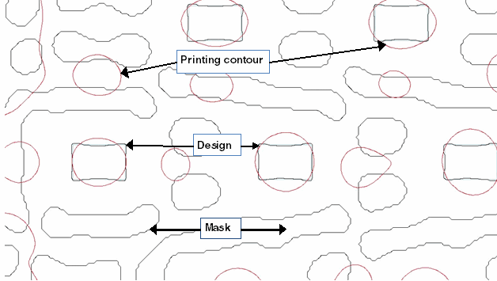

The Decorate
job generates SRAFs intended to deliver the maximum process window.
If the optimization is limited to one process condition, then the
dose latitude is optimized. The contract of the Decorate job is
that it generates at least two rows of generally correct assist
features. The SRAFs are robust and in dark areas. (Dark areas are outside
the target for dark backgrounds, and inside the target for clear backgrounds.)
If the Decorate contract is met, all main
features print. As much as 25% of the total SRAF area may also print;
this is repaired in the Correct job.
When the absolute value of the background is greater than the
absolute value of the transmission of the correction layer, or when
the mask is dark and the background is clear, use a Decoratedarksraf
job instead of a Decorate job. It performs the same function but
has different default settings.
Procedure
- First, determine if there
is a problem. A fairly typical mask with printing contours is shown
in Figure 1. The red curves represent printing
areas; they appear not only over the design features but also between (or
even occasionally within) SRAFs. But because the printing SRAF area
is less than 25% of the SRAF area, the contract is still met.
To see the “job 2 decorate”
output, add a setlayer pxopc command with “LASTJOB 2” to your
file. Using the layer names from “Example 2”, the command looks as follows:
setlayer px.deco = pxopc target trgtsmth MAP target \
OPTIONS SIMULATION_OPTIONS LASTJOB 2
Also add a rule check in the
SVRF file to copy it to the results:
dcrt_output {RET PXOPC target trgtsmth FILE "pxopc.in" MAP px.deco }
DRC CHECK MAP dcrt_output 22
Note: Do not
forget to remove the lines for extra output when you are ready to use
the SVRF and pxOPC setup files for production runs.
Figure 1. Typical Decorate Output
- If you are running Calibre
LPE and the generated SRAFs are not compatible with the ones from
the original mask, tune scatter_offset. Incompatible SRAFs may appear
as “wavy” SRAFs in the transition region.
- If there are too many rows
of SRAFs, try one of these methods:
Decrease scatter_belt by CD⁄4. The default is 0.256
um.
Decrease iterations in increments of two.
For negative
SRAFs, set scatter_belt_negative. Start
with 0.256 um and if needed decrease by CD/4. (Negative SRAFs are
not affected by scatter_belt.)
- If large areas are missing
SRAFs, try one of these methods:
If
there are too few SRAF rings, increase scatter_belt by CD/4.
If rings are
present but not complete (weak or inconsistent SRAFs), try one of
these methods:
Increase iterations in increments of two. The default
is eight.
Check the exposure
type. If the features are dark (that is, the absolute value of the
background transmission is greater than the absolute value of the
correction layer’s transmission), decrease the slope weight with
the option metric_impact slope factor 0.05.
To improve image slope, increase the slope
weight by adding “metric_impact slope
factor value”
to the Decorate job. Start tuning using a value greater than the
default 0.1.
- Re-run Calibre pxOPC and check
the output by running print image on the layer created by the Decorate
job. If the images are large enough but the output still needs improvement,
proceed to “Fixing Correct Job Problems”.
Results
The
output from the Decorate job shows consistent SRAFs and good feature
printing. While there is extra printing, it does not exceed 25%
of the total SRAF area.